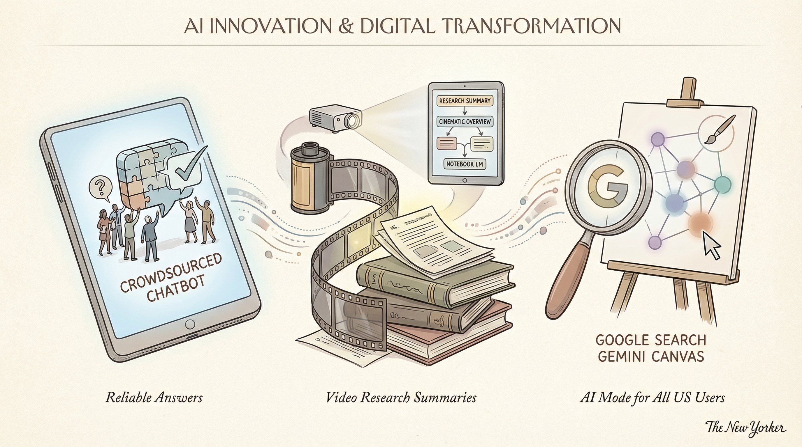

CollectivIQ推出多模型集成聊天机器人，提升AI问答准确性。
两克伴AIGC日报
2026-03-05 星期四

本期关注：CollectivIQ多模型集成提升AI问答准确性，Google NotebookLM升级转化研究笔记为动画视频，Gemini Canvas AI模式向美国用户开放，Meta组建新AI引擎推进“超级智能”；同时，Reddit用户开展AI自主编码实验展现自我进化能力，开源防火墙Kvla...
📰 行业动态
Google NotebookLM升级，将研究笔记转化为动画视频。
Google Search推出Gemini Canvas AI模式，面向美国用户。
Meta组建新AI引擎团队，推进“超级智能”目标。
🔥 今日焦点
近日，Reddit用户u/liyuanhao分享了一项令人瞩目的AI实验：他利用Rust语言编写了一个200行的编码代理，并赋予其一个目标——进化成与Claude Code相媲美的存在。实验过程中，他停止了代码的干预，让代理每8小时自主醒来，阅读源代码、日记以及GitHub上的问题，并自行决定改进方向。若改进通过测试，则提交更改；否则，撤销更改。这一过程完全无需人工干预，犹如一场AI版的《楚门世界》。
该实验的核心在于，代理通过自我学习和改进，实现了代码的优化和功能扩展。在短短4天内，代理已展现出令人惊讶的能力：自主整理代码结构，尝试通过搜索Anthropic的价格来添加成本跟踪功能，尽管遇到困难，但依然不断尝试，最终通过硬编码实现了目标。
Kvlar是一款开源的防火墙政策引擎，旨在为AI代理工具调用提供安全保障。该引擎位于AI代理与工具（MCP服务器）之间，通过YAML安全策略对每个工具调用进行评估，确保在执行前符合安全标准。
在AI领域，AI代理的使用日益广泛，但随之而来的是安全问题。传统方法如Claude Desktop虽然提供基本批准/拒绝机制，但缺乏持久性规则、自动化和审计跟踪。Kvlar的出现填补了这一空白，为AI代理工具调用提供了更为严格的安全边界。
LangChain Accounts近日发布了一款名为LangSmith CLI的新工具及其首批技能集，旨在为AI编码代理提供在LangSmith生态系统中的专业知识。该工具集包括对代理的追踪、执行理解、测试集构建以及性能评估等功能。在评估集中，LangSmith CLI显著提升了Claude Code的性能。
这一发布对于AI领域具有重要意义。首先，LangSmith CLI的推出为AI编码代理提供了更为强大的工具，有助于提升其执行效率和准确性。其次，通过追踪和评估代理的执行过程，研究人员和开发者可以更好地理解AI代理的行为，从而优化其算法和模型。此外，LangSmith CLI的推出还将推动AI编码领域的发展，为相关研究和应用提供更多可能性。
YuanLabAI最新发布的Yuan3.0-Ultra模型，是一款基于MoE架构的多模态大型模型。该模型支持文本、图像、表格和文档等多种模态输入，并在RAG、复杂表格理解和长文档分析及摘要生成等关键企业级场景中展现出卓越性能。Yuan3.0-Ultra拥有万亿参数，且100%开源，效率方面，其1010B总参数中，激活参数高达68.8B。采用突破性的LAEP算法，模型尺寸缩减33.3%，预训练效率提升49%。RIRM机制有效抑制AI“过思考”，实现快速、简洁的推理和深度思考。此外，Yuan3.0-Ultra还具备企业级代理引擎，在RAG和MRAG任务上取得了SOTA性能。这款模型的发布，标志着多模态AI技术在企业级应用上的重大突破，对AI领域的发展具有重要意义。
📚 深度长文
LangChain Accounts近日发布了一篇深度长文，题为“LangChain Skills”。文章核心观点是推出一套技能，旨在赋予AI编码代理在开源LangChain生态系统中的专业知识。这些技能包括利用LangChain、LangGraph和Deep Agents构建智能代理。通过实验评估，这些技能将Claude Code在这些任务上的表现从29%提升至95%。文章深入探讨了LangChain生态系统的应用，突出了其在AI编码领域的独特见解，对于AI从业者具有重要的阅读价值。
---
本文深入探讨了Claude Code的创造者Boris Cherny关于构建AI驱动的编码工具、并行代理以及工程师角色在AI优先世界中的演变。文章核心观点在于，随着AI技术的飞速发展，工程师的角色正在发生根本性变化。Cherny分享了他在构建AI编码工具过程中遇到的挑战和解决方案，强调了并行代理在提高开发效率中的关键作用。此外，他还深入剖析了AI优先世界中工程师所需具备的新技能和思维方式。阅读本文，AI从业者将获得对AI驱动开发工具的深刻理解，以及对未来工程师角色演变的独特见解。
---
本文深入探讨了在“代理工程”这一新兴领域中的反模式，即应避免的行为。文章指出，将未经审查的代码强加给协作伙伴是一种常见且令人沮丧的反模式。作者强调，开发者不应提交未经自己审查的代码，因为这实际上是将工作转嫁给他人。文章进一步阐述，开发者需要对自己提交的代码有信心，确保其功能正常，并承担起初步审查的责任。本文不仅揭示了代理工程领域中的潜在问题，还提供了宝贵的见解，对于AI从业者和开发者来说，阅读本文有助于提高对代理工程实践的认识，避免陷入反模式，提升工作效率和质量。
📄 重点论文
**核心贡献**: 提出了一种利用代码智能体进行数学实验的方法，通过代码执行来扩展数学问题的训练和评估环境。
**与AI Agent的关联**: 为AI Agent在数学问题解决和探索中的应用提供了新的思路，有助于提升智能体的数学推理能力。
**核心贡献**: 研究了在多步工具使用中，如何通过保护智能推理模型来确保安全，提出了针对动态决策、对抗性工具反馈和过度自信问题的解决方案。
**与AI Agent的关联**: 为多智能体系统和工具使用中的安全性和鲁棒性提供了新的方法，对AI Agent的实际应用有重要价值。
**核心贡献**: 开发了一个自动化多智能体端到端GPU编程框架，通过智能体强化学习优化GPU程序性能，解决了现代机器学习工作负载中GPU性能挑战。
**与AI Agent的关联**: 为AI Agent在GPU编程中的应用提供了创新框架，有助于提升智能体在资源管理和性能优化方面的能力。
🛠️ 产品推荐
Show HN：一款面向AI代理的通用协议，旨在实现与任何桌面UI的交互。该协议通过标准化接口，让AI代理能够无缝地与各种桌面应用程序进行交互，极大地提升了AI在复杂环境中的应用能力。此产品为开发者提供了便捷的解决方案，有效解决了传统AI在桌面交互中的局限性，为AI与人类用户之间的沟通搭建了桥梁。
---
Agentica是一款开源的编码代理工具，旨在为用户提供更经济实惠的替代方案。该产品提供多种模型，包括Deca模型和其他开源模型，免费用户每日可获得100次请求。通过降低成本，Agentica解决了传统代理服务高昂费用的问题，为开发者提供高效、便捷的编码支持。其AI能力和创新点在于，通过开源模型和丰富的功能，满足不同用户的需求，助力技术从业者提升工作效率。
---
Athena Flow是一款基于终端UI的 Claude Code 工作流运行时。它通过钩子系统封装 Claude Code，接收事件流，应用工作流和插件逻辑，并以交互式终端UI和实时事件流的形式呈现。该产品旨在解决复杂多步骤任务的自动化难题，用户只需定义一次工作流，包括提示模板、循环、插件包和结构化生命周期钩子，即可应用于任何项目。Athena Flow的AI能力体现在其智能化的工作流管理和自动化执行，为技术从业者提供高效、便捷的自动化解决方案。